Planeta Terra
Conjuntos, potências e radicais
M-Gucci / iStockphoto LP
converse

Do microcosmo ao macrocosmo
Ao observarmos os fenômenos que ocorrem na natureza, veremos que temos números que expressam medidas muito grandes, como a distância da Terra ao Sol, 1,5 ∙ 108 km, ou números muito pequenos, como a escala utilizada pelos cientistas para manipular as células-
-tronco, representadas acima, usadas em pesquisas para o tratamento de doenças, 10-5 m.
1. No texto, está representada a distância da Terra ao Sol. Como se chama a notação utilizada para indicar essa distância? Explique.
2. O número que representa a escala utilizada pelos cientistas para manipular células-tronco é uma potência de base 10, cujo expoente é negativo. Como poderíamos representar esse número na forma de número decimal?
Public Domain Pictures / Pixabay

 .
. 
Para realizar operações matemáticas, podemos utilizar um valor aproximado de acordo com a nossa necessidade, veja:

Neste caso, como o algarismo na ordem dos centésimos é igual a 3, mantivemos o algarismo dos décimos.
Para obtermos um valor aproximado, podemos arredondar um número para uma determinada ordem, observando-se o primeiro algarismo que está à direita do algarismo da ordem escolhida:
Observe alguns exemplos de números irracionais e seus arredondamentos.
 = 2,236067977499... ≅ 2,24
= 2,236067977499... ≅ 2,24 = 2,645751311064... ≅ 2,65
= 2,645751311064... ≅ 2,65Número pi (π)
Vamos conhecer, agora, um número irracional muito importante: pi. Ele é representado pela letra minúscula π do alfabeto grego.
Materiais
Procedimentos
1.º Construa, em seu caderno, a tabela abaixo. Anote nela o nome do objeto que será utilizado, a medida do comprimento da circunferência (C), a medida de seu diâmetro (d) e a razão entre a medida do comprimento e a medida do diâmetro.
|
Nome do objeto |
Medida do |
Medida do |
Razão entre a |
2.º Para coletar as medidas necessárias, contorne cada um dos objetos com o barbante. Em seguida, estique-o e meça com a régua o comprimento encontrado. Anote essas medidas na coluna “medida do comprimento da circunferência”.
3.º Utilizando a régua, meça o diâmetro da circunferência de cada um dos objetos e anote os valores na tabela.
4.º Com a calculadora, calcule a razão entre a medida do comprimento da circunferência e a de seu diâmetro. Arredonde os valores encontrados para um número inteiro. O valor encontrado é aproximado.
Na realização do experimento, você deve ter encontrado , ou seja, utilizamos uma aproximação.
No século XVII, foi provado que quando realizamos o quociente  3, o valor encontrado é um número decimal infinito e não periódico. Esse número é irracional e representado pela letra grega π (pi).
3, o valor encontrado é um número decimal infinito e não periódico. Esse número é irracional e representado pela letra grega π (pi).
π = 3,1415926535897932...
Sendo C a medida do comprimento da circunferência e d a medida do seu diâmetro, temos que:
= π → C = π · d
Como d = 2r, então:

Os números irracionais são números decimais, infinitos e não-periódicos e não podem ser representados por meio de frações irredutíveis, por esse motivo encontramos apenas uma valor aproximado para pi.
Reinaldo Rosa/Acervo da Editora
Mariana está curiosa para saber qual é o valor de .
Imagens: Acervo da Editora
MODELO

MODELO


MODELO
Reinaldo Rosa/Acervo da Editora
Reinaldo Rosa/Acervo da Editora
Encontre soluções


O conjunto roda/pneu tem medida 300/75-R22. O número 300 indica a largura (L), em mm, da banda de rodagem; o número 75 refere-se à porcentagem que a altura (H) do pneu representa da banda de rodagem; e o número 22 indica o diâmetro (d), em polegadas, da roda.
De acordo com as informações fornecidas, determine o número de voltas necessárias para que o conjunto roda/pneu percorra 6,28 km, sem derrapar. (Use 1 polegada = 0,025 m e π = 3,14).
Observe:
|
H (cm) |
h (cm) |
Razão H/h |
|
M (cm) |
m (cm) |
Razão M/m |
Reinaldo Rosa/Acervo da Editora

S.I./Casa da Moeda
Acervo Galeria da Academia de Veneza
h
H
MODELO
MODELO

MODELO
MODELO
MODELO
MODELO
MODELO
MODELO
Vamos relembrar os conjuntos já estudados.


Conjunto dos números reais
A união do conjunto dos números racionais com os irracionais recebe o nome de conjunto dos números reais.
Podemos representar os números reais em uma reta numérica (chamamos de reta real). Veja alguns exemplos:
Cada ponto da reta real corresponde a um número racional ou irracional.
Operações com números reais
Situação 1
Com o auxílio de uma calculadora, vamos calcular a raiz quadrada aproximada dos radicais que não são exatos. No próximo capítulo, estudaremos como encontrar o valor aproximado desses radicais sem o uso dela.
|
|
Logo:
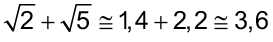
Situação 2
Para calcular o valor da raiz quadrada, devemos encontrar um número real que, elevado ao quadrado, seja igual a - 4.
Vamos verificar se isso é possível.
Portanto, não existe um número real que, elevado ao quadrado, seja igual a - 4. Logo,  ∉ ℝ.
∉ ℝ.
Reinaldo Rosa/Acervo da Editora

Reinaldo Rosa/Acervo da Editora
A raiz quadrada de um número negativo não representa um número real.
Reinaldo Rosa/Acervo da Editora
Encontre soluções
 ou 5?
ou 5? d)
d) 
-5

-4
C
-3

-2
B
-1
0

1
D
2
A
3
4
5
Relacione, em seu caderno, cada número real com a letra correspondente.

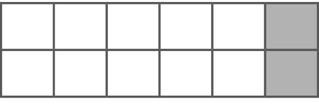
Ele deve preencher todas as casas do seu tabuleiro com os números de 1 a 12 de modo que:

Reinaldo Rosa/Acervo da Editora
Júlia é muito curiosa e está fazendo um histórico dos seus antepassados. Ela está construindo uma árvore genealógica para mostrar as conexões familiares. Observe a árvore que ela construiu.
Para calcular a quantidade de trisavós e de tataravós, utilizamos uma potência.

Vejamos alguns exemplos:


Atenção!

No primeiro caso, a base é igual a 8 e no segundo, a − 8. Resolvemos de forma diferente, observe:
Ana
Minha árvore genealógica
Bisavó
Amélia
Bisavó
Pedro
Regina
Bisavô
Vovó
Raul
Bisavô
Artur
Martha
Vovô
Mamãe
Júlia
Márcia
Bisavó
Paulo
Vovô
Carlos
Roberto
Papai
Bisavô
Inês
Angela
Vovó
Bisavó
Marcos
Bisavô
Reinaldo Rosa / Acervo da Editora.
Encontre soluções


a) 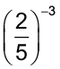
b)
c)
d)
e)
f) 


Reinaldo Rosa / Acervo da Editora.
Lembre-se que ,
sendo que a ≠ 0 e o expoente um número inteiro.
Propriedades da potenciação
Vamos relembrar as propriedades da potenciação.
Multiplicação de potências de mesma base

Ou seja,
(-8)2 ∙ (− 8)3 = (− 8)2 + 3 = (− 8)5

Veja outros exemplos:

Divisão de potências de mesma base
► 
Ou seja,
(-5)5 : (−5)2 = (−5)5 - 2 = (−5)3
Veja outros exemplos:

Potência de uma potência
Ou seja,
[(−7)4]2 = (−7)4 ∙ 2 = (−7)8
Veja outros exemplos:


Atenção!

No primeiro caso, 23 está elevado à quarta potência; no segundo caso, somente o expoente 3 está elevado a quarta potência, observe:
► (23)4 = 212 ► 
Potência de uma multiplicação ou divisão

Ou seja,


Ou seja,

Veja outros exemplos:

Acabamos de revisar as propriedades da potenciação estudadas em anos anteriores.
Sendo a e b números reais e, m e n números inteiros, podemos generalizar essas propriedades.

As propriedades da potenciação podem nos auxiliar a resolver expressões sem que precisemos inicialmente resolver cada uma das potências.
Vamos resolver a expressão  .
.
Primeiramente, vamos transformar 1 024 e 512 em potências de base 2, fatorando cada um dos números. Observe:

Substituindo 1 024 e 512 por 210 e 29, respectivamente, e aplicando as propriedades da potenciação, temos:

Encontre soluções


a) | b) 28 | c) | d) 44 |


Encontre soluções
|
Rádio |
Frequência |
|
Rádio AM |
1 080 kHz (quilohertz) |
|
Rádio FM |
102 MHz (megahertz) |
|
Rádio amador |
147 MHz (megahertz) |
|
Rádio digital |
11 GHz (gigahertz) |
O hertz (Hz) é a unidade de medida derivada do Sistema Internacional para frequência e equivale a um ciclo por segundo. Abaixo, temos a relação entre o hertz e alguns dos seus múltiplos.
Expressando na forma de notação científica, escreva a frequência de cada uma das emissoras de rádio citadas acima em unidade de Hz.
De acordo com o infográfico, responda:
Reinaldo Rosa / Acervo da Editora.
Notação científica
Para escrevermos um número na forma de notação científica, temos que transformar esse número em um produto de dois fatores, sendo que o primeiro fator será um número maior ou igual a 1 e menor que 10, e o segundo, uma potência de base 10.
Vamos relembrar como transformar um número dado em notação científ ica.
Fonte: Estadão. Disponível em: http://www.estadao.com.br/infograficos/cidades,ancestral-do-homem-tem-2-8-mi-de-anos,381789. Acesso em: 23 fev. 2022.
Radiciação
Vamos iniciar a radiciação resolvendo algumas situações.
Situação 1
Em uma fazenda, reservou-se uma região quadrada de 2 500 m² para pasto. Quanto mede cada lado dessa região?
Situação 2
Um bloco de concreto na forma de um cubo tem 8 m³ de volume. Quanto mede cada aresta desse bloco?
Lembre-se que o volume de um cubo é dado por  , ou seja, para determinar o volume do cubo, eleva-se ao cubo a medida de sua aresta.
, ou seja, para determinar o volume do cubo, eleva-se ao cubo a medida de sua aresta.
Para resolver as situações anteriores, utilizamos a radiciação.
A radiciação e a potenciação são operações inversas. Observe os seguintes exemplos e a definição de cada um dos elementos que constitui um radical:
 = 5, pois 52 = 25
= 5, pois 52 = 25
 = 3, pois 33 = 27
= 3, pois 33 = 27
Em = 5 (lê-se: a raiz quadrada de 25 é igual a 5), temos que:
Quando o índice do radical for igual a 2, não é necessário indicá-lo, ou seja, é o mesmo que .
Em = 3 (lê-se: a raiz cúbica de 27 é igual a 3), temos que:
Exemplos de cálculo da raiz pela fatoração:
|
225 |
3 |
32 |
|
75 |
3 |
|
|
25 |
5 |
52 |
|
5 |
5 |
|
|
1 |

Logo: 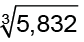 = 1,8, pois (1,8)3 = 5,832
Vamos verificar o que ocorre quando o índice de um radical é par e quando ele é ímpar.
Quando o índice do radical é par
Observe:
 não é um número real, pois não existe um número real que elevado ao quadrado resulte -16.
não é um número real, pois não existe um número real que elevado ao quadrado resulte -16.Lembre-se! A radiciação e a potenciação são operações inversas. Na potenciação, para qualquer valor elevado a um expoente par, a resposta sempre será positiva.
Quando o índice do radical é ímpar
Observe:
= 3, pois 33 = 27.  = −3, pois (−3)3 = −27.
= −3, pois (−3)3 = −27.  = 2, pois 25 = 32.
= 2, pois 25 = 32. Reinaldo Rosa / Acervo da Editora.
|
5 832 |
2 |
23 |
|
2 916 |
2 |
|
|
1 458 |
2 |
|
|
729 |
3 |
33 |
|
243 |
3 |
|
|
81 |
3 |
|
|
27 |
3 |
33 |
|
9 |
3 |
|
|
3 |
3 |
|
|
1 |
Lembre-se de que também
a fatoração pode nos auxiliar a
calcular a raiz exata.
225 = 32 ∙ 52 = (3 ∙ 5)2 = (15)2
Logo:
= 15, pois 152 = 225
|
1 000 |
2 |
23 |
|
500 |
2 |
|
|
250 |
2 |
|
|
125 |
5 |
53 |
|
25 |
5 |
|
|
5 |
5 |
|
|
1 |
Reinaldo Rosa / Acervo da Editora.

Reinaldo Rosa / Acervo da Editora.
Os radicais com índices ímpares e
números negativos no radicando
são números reais.
Radicais com índice par de números negativos não são números reais.
Reinaldo Rosa / Acervo da Editora.
Encontre soluções


Potências com expoente racional
Já sabemos realizar cálculos em que as potências apresentam expoente com números inteiros. Agora vamos estudar como calcular uma potência quando o expoente é um número racional.
Observe:


Como os resultados são iguais, temos que  .
.
Vejamos outro exemplo:
Vamos usar uma calculadora científica para nos auxiliar a extrair a raiz cubica de 274.
Vamos usar as teclas  e
e  .
.
digite 27, tecle , digite 4 e tecle .
Aparecerá no visor: 531 441.
tecle  , digite 3 (índice) e tecle .
, digite 3 (índice) e tecle .
Aparecerá no visor: 81.
Portanto:
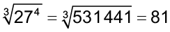
Como os resultados são iguais, temos que 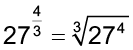.

Veja outros exemplos:


a
Encontre soluções


Propriedades dos radicais
Da mesma forma que a potenciação, a radiciação também apresenta algumas propriedades fundamentais que ajudam a simplificar os cálculos e aplicações matemáticas. Vamos estudar na sequência quais são essas propriedades.
1.a propriedade

Observe:
 = 6, pois 62 = 36
= 6, pois 62 = 36Logo:

= 3, pois 33 = 27Logo:
Lembre-se de que o símbolo representa o conjunto dos números reais, e que o símbolo + representa o conjunto dos reais não negativos, ou seja, o conjunto formado pelo zero e todos os números reais positivos.
Reinaldo Rosa / Acervo da Editora.
Veja outros exemplos:

Atenção!
 , ou seja, 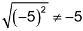.
, ou seja, 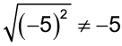.
2.a propriedade
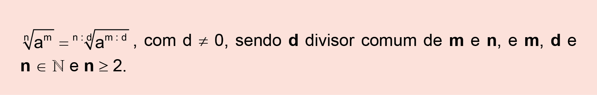
Observe:
 = 3
= 3
Como os resultados são iguais, temos:
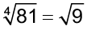

Vamos simplificar dividindo o índice e o expoente por um mesmo número.

Veja outros exemplos:

3.a propriedade

Observe:

Então:
Note que a igualdade conserva-se verdadeira quando multiplicamos os índices dos radicais.
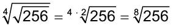
Veja outros exemplos:


4.a propriedade

Observe:
Como os resultados são iguais, temos:

Também podemos mostrar essa igualdade utilizando a notação da potência de expoente racional para os radicais e utilizando as propriedades da potenciação:
Veja outros exemplos:


Atenção!
Utilizando a propriedade que acabamos de estudar, vamos mostrar uma igualdade importante.

De modo geral, respeitando as condições de existência dos radicais, temos:

Encontre soluções


 .
.

5.a propriedade
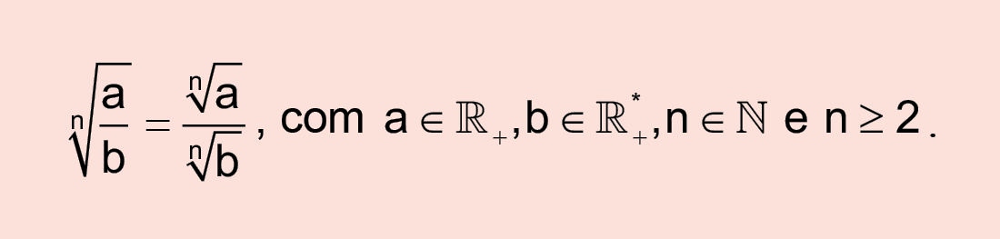
Observe:


Como os resultados são iguais, temos:
Também podemos mostrar essa igualdade utilizando a notação da potência de expoente racional para os radicais e utilizando as propriedades da potenciação:

Veja outros exemplos:

Lembre-se de que o símbolo * representa o conjunto dos números reais, excluindo-se o zero. O símbolo *+ representa o conjunto dos números reais positivos, ou seja, 0 ∉ *+.

Reinaldo Rosa / Acervo da Editora.
Simplificando fatores do radicando
Há diversas situações que envolvem cálculos com raízes não exatas. Nesses casos, para simplificá-los, podemos extrair fatores ou inserir um fator externo no radicando.
Acompanhe, a seguir, exemplos de como proceder em cada caso.
Extraindo fatores do radicando
Observe a seguinte expressão:

Podemos simplificá-la usando as propriedades de radiciação:
Logo,  , ou seja, 3.
, ou seja, 3.
Veja outros exemplos:


Para simplif icar os radicais extraindo fatores do radicando, às vezes, precisamos decompor o radicando em números primos e, na sequência, usar as propriedades de potenciação e de radiciação.
x
Reinaldo Rosa / Acervo da Editora.
Encontre soluções


Inserindo um fator no radicando
Para inserir um fator externo à raiz no radicando, o processo é feito de modo inverso ao da extração dos fatores. Observe:

Então:

Veja outros exemplos:
Operações com radicais
Há muitas expressões que envolvem operações básicas com radicais. Vamos conhecer, a seguir, como é o processo de cálculo para cada operação.
Adição e subtração de radicais
Observe a seguinte expressão:

Podemos resolvê-la de duas maneiras:
1.ª maneira
Calculando o valor dos radicais:
= 2 · 2 + 5 · 2 - 3 · 2 = 4 + 10 - 6 = 82.ª maneira
Fatorar, colocando o fator comum em evidência:
=  (2 + 5 - 3) =
(2 + 5 - 3) =  = 4 · 2 = 8
= 4 · 2 = 8
Veja outros exemplos:


Obtendo radicais com mesmo radicando, temos:

Reinaldo Rosa / Acervo da Editora.
Preste atenção na informação a seguir. Ela é importante!
+ ≠
2 + 2,24 ≠
4,24 ≠ 3
Usando a calculadora,
= 2,2360679...
Aqui consideramos = 2,24.
Reinaldo Rosa / Acervo da Editora.
Expressões com multiplicação de radicais
Uma das aplicações das propriedades dos radicais é na resolução de expressões que envolvem a multiplicação de radicais de mesmo índice. Observe:
 + )
+ )Aplicando a propriedade distributiva da multiplicação, temos:
= · (5 + ) =
+ ) =
= · 5 + · =
=
Aplicando as propriedades da radiciação, temos:
= 5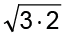 + =
= 5 + 3
) · (2 + )Aplicando a propriedade distributiva da multiplicação, temos:
= ( - 2) · (2 + ) =
- 2) · (2 + ) =
= · 2 + · - 2 · 2 - 2 · =
Aplicando as propriedades da radiciação, temos:

+ )2
)2Observe que podemos reescrever da seguinte forma:

Observe que podemos reescrever da seguinte forma:

Encontre soluções
Multiplicação e divisão entre radicais com índices diferentes
Só é possível multiplicar e dividir radicais se eles tiverem o mesmo índice.
Assim, caso o produto seja entre radicais com índices diferentes, primeiramente devemos transformá-los em radicais com o mesmo índice. Acompanhe este exemplo:

No primeiro fator, temos o índice igual a 2; no segundo, o índice é igual a 3. Para transformar em radicais com o mesmo índice, inicialmente determinamos o mmc entre os índices 2 e 3.
mmc (2,3) = 6
Logo, 6 será o novo índice dos radicais.
Agora, observe como transformar cada radical com o novo índice:
1.o fator:
Lembre-se de que  .
.
Para transformar o índice 2 em 6, temos de multiplicá-lo por 3. Para não alterar o valor do radical, o expoente do radicando também deverá ser multiplicado pelo mesmo fator. Assim, temos:

2.o fator: 
Para transformar o índice 3 em 6, devemos multiplicá-lo por 2. O mesmo deve ser feito com o expoente do radicando.

Agora, é possível resolver a multiplicação:

Veja outro exemplo:
Determinando o mmc entre os índices, temos:
mmc (3, 5) = 15
Assim:
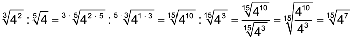


 ?
? Encontre soluções


Racionalização de denominadores
Alguns cálculos podem apresentar frações cujo denominador é um radical. Nesse caso, eliminamos o radical do denominador, transformando essa fração em outra equivalente. Esse processo é denominado de racionalização de denominadores.
Vejamos como racionalizar a expressão  .
.
Se multiplicarmos (denominador) por ele mesmo, o resultado será um número inteiro sem radical, ou seja:

Para não alterar o valor que a fração representa, multiplicamos também o numerador por . Assim, o processo de racionalização será:
Logo:
Note que o fator é igual a 1, elemento neutro da multiplicação. Por isso, a racionalização não altera o valor da fração.
Para exemplificar essa propriedade, vamos calcular a expressão  .
.
Calculando o radical, temos:

Fazendo a racionalização, temos:

Dessa forma, evidencia-se que a fração cujo denominador é um radical tem o valor equivalente ao resultado da sua racionalização.
Acompanhe outros exemplos de racionalização:


Logo, .
Portanto,  é equivalente a .
é equivalente a .
Quando o índice da raiz for diferente de 2, o fator racionalizante deverá ser obtido no início. Observe:

Já vimos que  e que . Então, para racionalizar , devemos multiplicá-lo por
e que . Então, para racionalizar , devemos multiplicá-lo por  :
:
Veja outro exemplo:
Racionalizando:


Reinaldo Rosa / Acervo da Editora.
Em alguns casos podemos utilizar o seguinte padrão:
(a + b) . (a − b) = a2 − b2.
Vamos utilizar o exemplo da expressão  .
.
.
Logo,  .
.
Veja outro exemplo:


Logo,  .
.
Observe que o denominador dessa expressão é a soma de dois termos. Então, para racionalizá-lo, vamos multiplicar a expressão pela diferença entre esses termos. Veja:

Reinaldo Rosa / Acervo da Editora.
Reinaldo Rosa / Acervo da Editora.
Encontre soluções


 .
.


Dica: escreva o radicando em forma de número fracionário!
Probabilidade e estatística
Mariana colocou em uma caixa de acrílico 5 bolas azuis, 3 bolas vermelhas e 2 bolas verdes.
Se Mariana sacudir a caixa para misturar as bolas e, na sequência, sem olhar, retirar uma das bolas coloridas, qual a chance ou a probabilidade dessa bola ser:
Como na caixa há um total de 10 bolas e há mais bolas azuis, a chance ou probabilidade de sair uma bola azul é maior.
Vejamos qual é a chance ou a probabilidade em cada um dos casos.
 .
. . Logo, temos que
. Logo, temos que  .
.A chance de Mariana retirar uma bola azul é de 50%; uma bola vermelha, 30%; e uma bola verde, 20%.
O gráfico a seguir apresenta o resultado da enquete.
O administrador do blog irá sortear um livro entre os visitantes que opinaram na postagem “Contos de halloween”. Sabendo que nenhum visitante votou mais de uma vez, a probabilidade de uma pessoa escolhida ao acaso entre as que opinaram ter assinalado que o conto “Contos de halloween” é “Chato” é mais aproximada por:
Campanha de vacinação contra a gripe suína
|
Datas de vacinação |
Público-alvo |
Quantidade de |
|
8 a 9 de março |
Trabalhadores da saúde e indígenas |
42 |
|
22 de março a 2 de abril |
Portadores de doenças crônicas |
22 |
|
5 a 23 de abril |
Adultos saudáveis entre 20 e 29 anos |
56 |
|
24 de abril a 7 de maio |
População com mais de 60 anos |
30 |
|
10 a 21 de maio |
Adultos saudáveis entre 30 e 39 anos |
50 |
Disponível em: http://img.terra.com.br. Acesso em 28 abr. 2010 (adaptado).
Escolhendo-se aleatoriamente uma pessoa atendida nesse posto de vacinação, a probabilidade de ela ser portadora de doença crônica é


S.I. / Casa da Moeda
Reinaldo Rosa / Acervo da Editora.
Willi Heidelbach / Pixabay
relembrE

Qual é o número que a letra J está assinalando?
 e c = , podemos afirmar que:
e c = , podemos afirmar que: é igual a:
é igual a:

O menor número de voltas completas para a roda percorrer uma distância maior que 10 m é:
A empresa fica no ponto E, há um restaurante no ponto R, uma agência dos Correios no ponto C e uma lanchonete no ponto L. Quando saem para almoçar, as pessoas fazem caminhos diferentes: Maria sempre se desloca pela calçada que circunda a praça; Carmem sempre passa pelo centro da praça, vai olhar o cardápio do restaurante e, se este não estiver do seu agrado, vai almoçar na lanchonete, caminhando pela calçada; Sérgio sempre passa pelo centro da praça e pelos Correios, daí seguindo para a lanchonete ou para o restaurante. Sabendo que as pessoas sempre percorrem o menor arco possível quando caminham na calçada que circunda a praça, avalie as afirmativas a seguir:
I. Quando Carmem e Sérgio vão almoçar na lanchonete, ambos percorrem a mesma distância.
II. Quando Maria e Sérgio vão almoçar na lanchonete, quem percorre a menor distância é Maria.
III. Quando todos os três vão almoçar no restaurante, Carmem percorre a menor distância.
Assinale a alternativa correta.
 , obtemos o resultado:
, obtemos o resultado: é:
é:a)
b) 
c)
d) 
 , então o valor de ab é:
, então o valor de ab é:a)
b) 
c) 
d) 
 é igual a:
é igual a:a) 2-1
b) 20
c)
d) 24
 é igual a:
é igual a:

a)
b) 
c)
d) 21


 é igual a:
é igual a:


a)
b) 
c) 
d) 
a) 
b)
c) 
d)
e) n.d.a.


 é:
é: